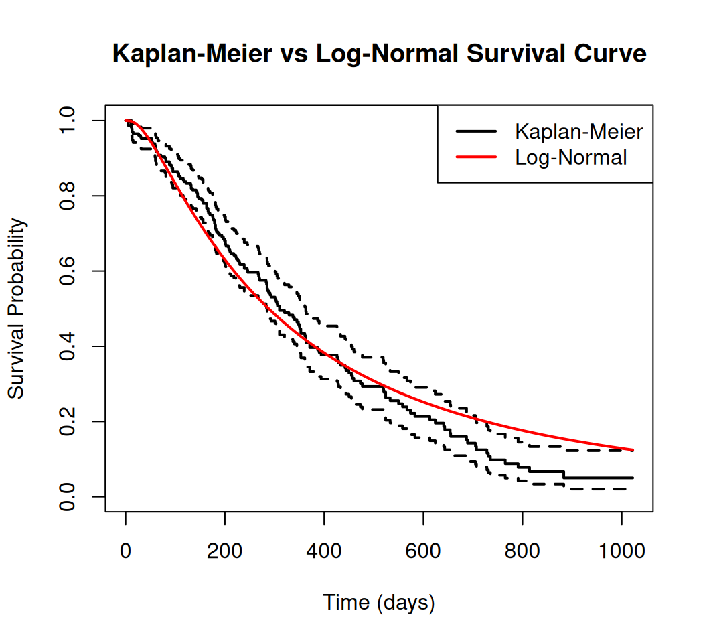
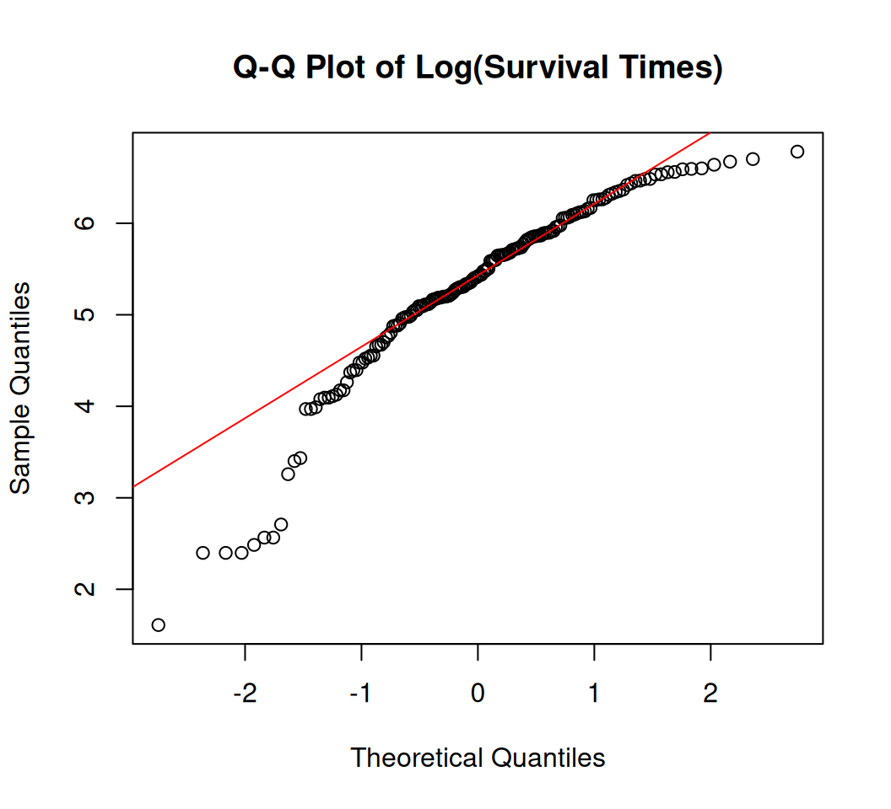
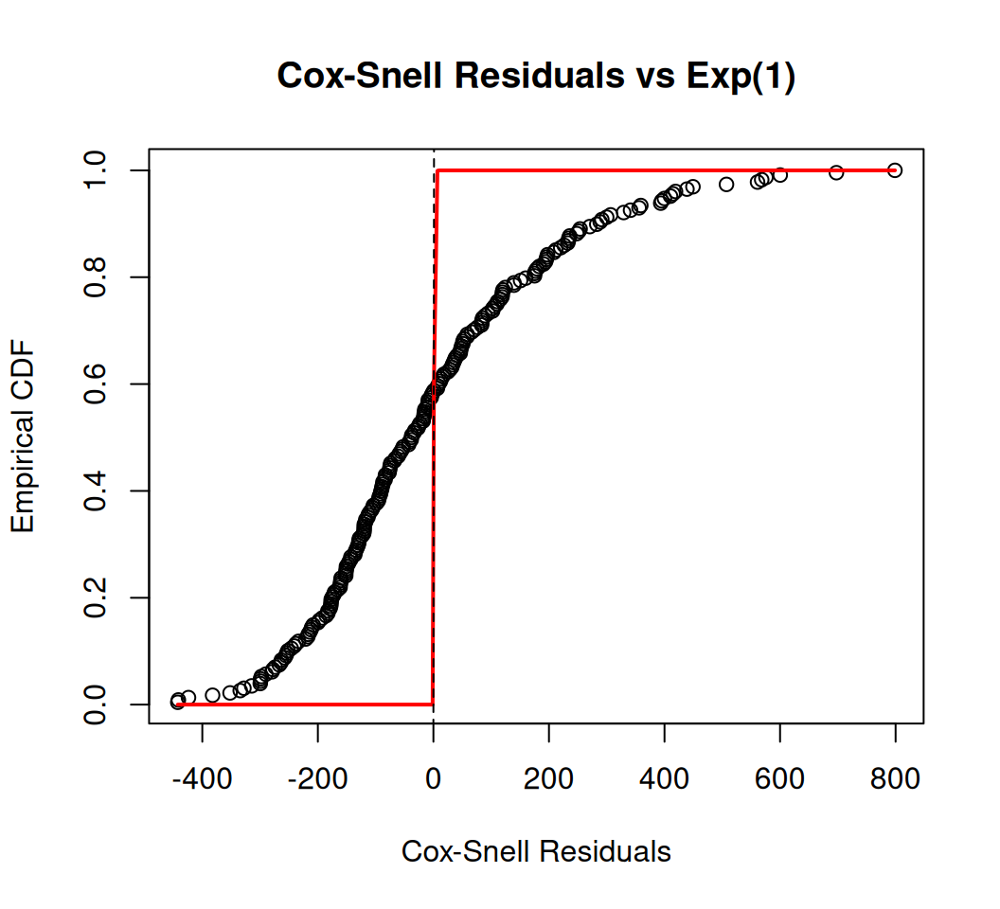
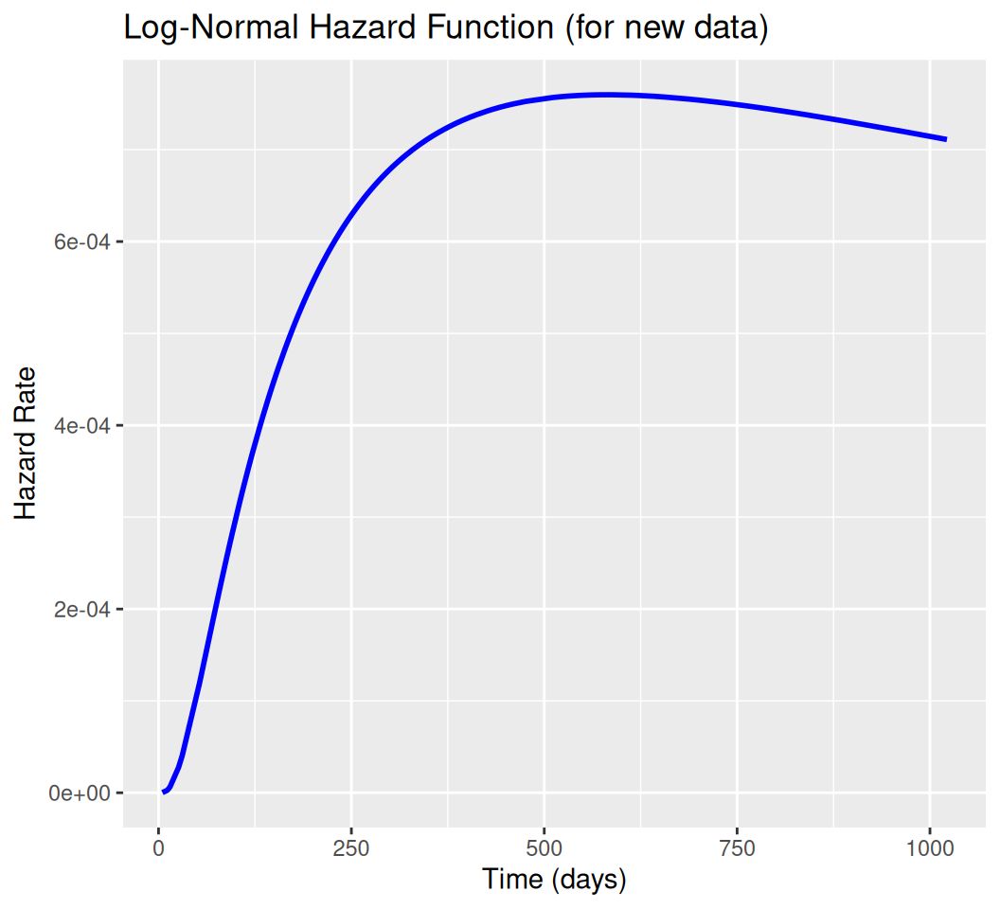

This tutorial covers the Log-Normal survival model, including its theoretical background, implementation in R, and practical examples using the survival package. We will also address common pitfalls and provide diagnostic tools to assess model fit.
Overview
The Log-Normal survival model is a parametric model used in survival analysis where the logarithm of the survival time \(T\), denoted \(\ln(T)\), follows a normal distribution, i.e., \(\ln(T) \sim \mathcal{N}(\mu, \sigma^2)\). Here, \(\mu\) is the mean of the log-time (location parameter), and \(\sigma > 0\) is the standard deviation (scale parameter). This model is part of the Accelerated Failure Time (AFT) framework, where covariates scale the survival time multiplicatively, accelerating or decelerating the time to an event (e.g., death, failure).
Key Features
Hazard Function: Unlike the exponential or Weibull models, the log-normal model has a non-monotonic hazard function that typically increases to a peak and then decreases, making it suitable for scenarios where the risk rises initially (e.g., post-surgery complications) and later declines (e.g., recovery phase). For small \(\sigma\), the hazard may be monotonically decreasing.
Applications: Commonly used in medical research (e.g., time to disease recurrence), reliability engineering (e.g., component failure times), or economics (e.g., duration of unemployment) when survival times are positively skewed and hazards are arc-shaped.
Assumptions: Assumes \(\ln(T)\) is normally distributed, implying \(T\) is log-normally distributed. This is appropriate when empirical hazard plots (e.g., from Kaplan-Meier) suggest a non-monotonic or decreasing hazard.
Limitations: Not suitable for monotonically increasing hazards (use Weibull instead). It does not naturally fit a proportional hazards framework like the Cox model, though it can be adapted.
Probability Density Function (PDF):
\[
f(t) = \frac{1}{t \sigma \sqrt{2\pi}} \exp\left( -\frac{(\ln(t) - \mu)^2}{2\sigma^2} \right), \quad t > 0
\] This describes the distribution of survival times, skewed to the right due to the log transformation.
where \(\Phi\) is the standard normal cumulative distribution function (CDF). This gives the probability of surviving past time \(t\).
Hazard Function:
\[
h(t) = \frac{f(t)}{S(t)} = \frac{\frac{1}{t \sigma \sqrt{2\pi}} \exp\left( -\frac{(\ln(t) - \mu)^2}{2\sigma^2} \right)}{1 - \Phi\left( \frac{\ln(t) - \mu}{\sigma} \right)}
\] No closed form exists, but it typically rises to a peak and then falls (arc-shaped) for ( > 1 ), or is decreasing for ( ).
Nonparametric hazard estimates (e.g., from Kaplan-Meier or kernel smoothing) show an arc-shaped or decreasing hazard.
Survival times are positively skewed, and log-transformation normalizes them.
You prefer an AFT model to interpret covariate effects as time scaling (e.g., a positive coefficient extends survival time).
Model Fit Assessment
Use AIC/BIC to compare with other models (e.g., Weibull, exponential).
Check residuals (e.g., Cox-Snell) or compare fitted survival curves to Kaplan-Meier estimates.
Validate the log-normal assumption with Q-Q plots of log-times or hazard shape diagnostics.
Implementation in R
This tutorial demonstrates fitting a log-normal survival model using R’s survival package, with diagnostics to assess model fit. We’ll use the lung dataset from survival, which contains survival times for lung cancer patients. The code includes data preparation, model fitting, predictions, plotting, and diagnostics, addressing lessons from your previous queries (e.g., handling status, centering covariates, and robust plotting).
Install Required R Packages
Following R packages are required to run this notebook. If any of these packages are not installed, you can install them using the code below:
Null Model: lnorm_model fits a baseline log-normal model (~ 1).
Covariate Model: lnorm_model_cov includes age_centered and sex. Coefficients represent shifts in \(\mu\) (log-time); positive values extend survival time.
Output: summary(lnorm_model_cov) shows \(\mu\) (Intercept), coefficients, and \(\sigma\) (Scale).
Code
# Create survival objectsurv_object <-Surv(time = lung$time, event = lung$status)# Fit log-normal modelslnorm_model <-survreg(surv_object ~1, data = lung, dist ="lognormal")lnorm_model_cov <-survreg(Surv(time, status) ~ age + sex, data = lung, dist ="lognormal")print("Model summary (with covariates):")
[1] "Model summary (with covariates):"
Code
summary(lnorm_model_cov)
Call:
survreg(formula = Surv(time, status) ~ age + sex, data = lung,
dist = "lognormal")
Value Std. Error z p
(Intercept) 6.40799 0.59293 10.81 < 2e-16
age -0.02336 0.00839 -2.78 0.00536
sex 0.51925 0.15515 3.35 0.00082
Log(scale) 0.05134 0.05602 0.92 0.35943
Scale= 1.05
Log Normal distribution
Loglik(model)= -1158.8 Loglik(intercept only)= -1169.3
Chisq= 21.04 on 2 degrees of freedom, p= 2.7e-05
Number of Newton-Raphson Iterations: 3
n= 228
Predictions
Median Time: type = "response" returns \(e^\mu\), the median survival time for the log-normal model.
Survival Probability: Uses plnorm with lower.tail = FALSE to compute \(S(t) = P(T > t)\).
Code
# Prediction for new data (60-year-old male)new_data <-data.frame(age =60-mean(lung$age), sex =1)median_time <-predict(lnorm_model_cov, newdata = new_data, type ="response")print("Median survival time (days):")
[1] "Median survival time (days):"
Code
print(median_time)
1
1079.663
Plotting
Survival Curve: Compares Kaplan-Meier to the log-normal survival curve. A close match suggests good fit.
Lessons from Prior Errors: Avoids issues like the lines error ('x' and 'y' lengths differ) by using a single curve with t_seq and surv_lnorm.
Code
# Survival probability at t=500 dayssurv_prob <-plnorm(500, meanlog =predict(lnorm_model_cov, newdata = new_data, type ="lp"), sdlog = lnorm_model_cov$scale, lower.tail =FALSE)print("Survival probability at t=500 days:")
[1] "Survival probability at t=500 days:"
Code
print(surv_prob)
[1] 0.7676945
Code
# Plot Kaplan-Meier and log-normal curve (null model)km_fit <-survfit(surv_object ~1)plot(km_fit, main ="Kaplan-Meier vs Log-Normal Survival Curve", xlab ="Time (days)", ylab ="Survival Probability", col ="black", lwd =2)t_seq <-seq(0, max(lung$time), length.out =100)mu <-coef(lnorm_model)[1]sigma <- lnorm_model$scalesurv_lnorm <-plnorm(t_seq, meanlog = mu, sdlog = sigma, lower.tail =FALSE)lines(t_seq, surv_lnorm, col ="red", lwd =2)legend("topright", c("Kaplan-Meier", "Log-Normal"), col =c("black", "red"), lwd =2)

Model Diagnostics
Q-Q Plot for Log-Normal Assumption
Code
# 1. Q-Q Plot for Log-Normal Assumptionlog_times <-log(lung$time[lung$status ==1]) # Use event timesqqnorm(log_times, main ="Q-Q Plot of Log(Survival Times)")qqline(log_times, col ="red")

Cox-Snell Residuals
Code
# 2. Cox-Snell Residualsresiduals_cs <- (lung$time -predict(lnorm_model_cov, type ="response")) / lnorm_model_cov$scaleplot(sort(residuals_cs), (1:length(residuals_cs))/length(residuals_cs), main ="Cox-Snell Residuals vs Exp(1)", xlab ="Cox-Snell Residuals", ylab ="Empirical CDF")lines(sort(residuals_cs), pexp(sort(residuals_cs), rate =1), col ="red", lwd =2)abline(0, 1, lty =2)

Hazard Function Plot
Code
# 4. Hazard Plot (using flexsurv for estimation)library(flexsurv)flex_lnorm <-flexsurvreg(surv_object ~ age + sex, data = lung, dist ="lnorm")haz_lnorm <-summary(flex_lnorm, newdata = new_data, type ="hazard", tidy =TRUE)ggplot(haz_lnorm, aes(x = time, y = est)) +geom_line(col ="blue", lwd =1) +ggtitle("Log-Normal Hazard Function (for new data)") +xlab("Time (days)") +ylab("Hazard Rate")

Summary and Conclusion
The Log-Normal survival model is a powerful parametric approach for analyzing time-to-event data, particularly when the hazard function is non-monotonic. By assuming that the logarithm of survival times follows a normal distribution, this model provides a flexible framework for understanding how covariates influence survival times through an Accelerated Failure Time (AFT) perspective.